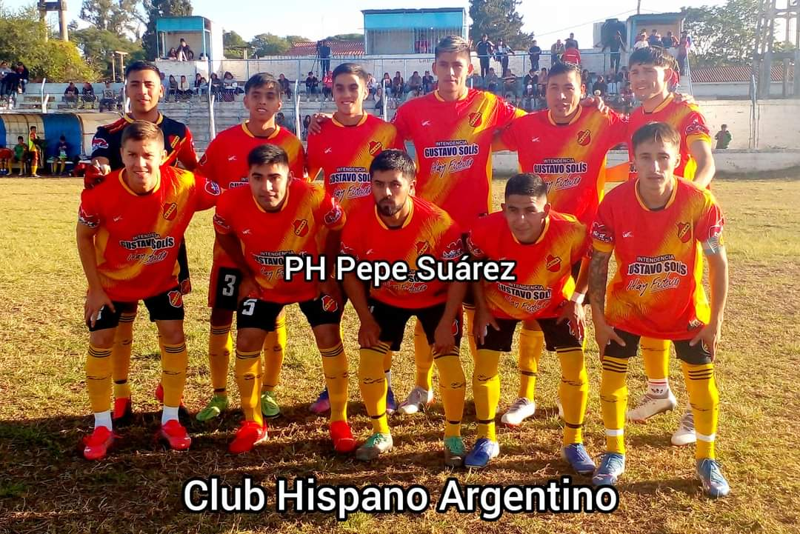

HISPANO A LA FINAL CON GUEMES
El Club Atlético Hispano Argentino fue fundado el 13 de abril de 1923 cuando un grupo de inmigrantes españoles establecidos en Rosario de la Frontera se reunió en una vieja colonia agrícola para organizar un nuevo club social y deportivo. La nostalgia por la patria lejana (España) y el cariño por la nueva patria que los había acogido (Argentina)
ULTIMAS NOTICIAS
NORMAL DIO VUELTA UN PARTIADASO
Esta institución de Villa Manuela, tuvo su origen un 9 de septiembre del año 1915. Su fundador fue el Sr. Pablo Flores, que le puso el nombre en forma desinteresada. El primer presidente fue don Rafael Juárez, luego lo hizo Simón Romano (ya fallecido) que supieron dar todo de si en condición de dirigentes, sin olvidarnos de don Lucindo Bustos, Juan Salinas (padre)
3 PUNTOS IMPORTANTES PARA CHACA
Esta institución de Villa Manuela, tuvo su origen un 9 de septiembre del año 1915. Su fundador fue el Sr. Pablo Flores, que le puso el nombre en forma desinteresada. El primer presidente fue don Rafael Juárez, luego lo hizo Simón Romano (ya fallecido) que supieron dar todo de si en condición de dirigentes, sin olvidarnos de don Lucindo Bustos, Juan Salinas (padre)
EL TIGRE VOLVIO A CAER
Esta institución de Villa Manuela, tuvo su origen un 9 de septiembre del año 1915. Su fundador fue el Sr. Pablo Flores, que le puso el nombre en forma desinteresada. El primer presidente fue don Rafael Juárez, luego lo hizo Simón Romano (ya fallecido) que supieron dar todo de si en condición de dirigentes, sin olvidarnos de don Lucindo Bustos, Juan Salinas (padre)
EL GACUCHO CAYO 3 A 1
Esta institución de Villa Manuela, tuvo su origen un 9 de septiembre del año 1915. Su fundador fue el Sr. Pablo Flores, que le puso el nombre en forma desinteresada. El primer presidente fue don Rafael Juárez, luego lo hizo Simón Romano (ya fallecido) que supieron dar todo de si en condición de dirigentes, sin olvidarnos de don Lucindo Bustos, Juan Salinas (padre)